Deng Yiyang – Academic Resume
(the corresponding photos are at the bottom of the file)
Profile
18-year-old student from Shaanxi, currently Grade 10 at The High School Affiliated to Shaanxi Normal University. Proficient in four languages: Mandarin (native), English (C2), Spanish (C1), French (C1). Highly active in maker projects, programming, theater directing/acting, and cross-cultural community building.
Major Honors & Awards
• 2024 – National Top 100, National First Prize, Provincial First Prize – BFSU 'FLTRP Cup' English Literacy Competition
• 2020 – Hope Star National English Competition: National Third Prize, Provincial Special Prize
Leadership & Extracurricular Activities
• Class Monitor – assisting homeroom teacher in managing class affairs.
• Theater Production & Directing: Independently adapted and directed stage works including segments from *Fahrenheit 451* (2024) and *Kong Yiji* (2023).
Public Service & Volunteering
• Founder (2021–present): Chinese-English International Exchange Community (https://chinese-learning.me), running weekly bilingual exchange sessions and free Mandarin classes for foreign learners. Operated continuously for over 4 years, nearly 200 sessions, serving 6,000+ participants.
• Weekend Volunteer Teaching Assistant – Xi'an Little Fish Art Aid Public Welfare Center.
• Creator of a 120-episode multilingual English IPA video course (Chinese/English/Spanish/French).
Technical & Maker Projects
• Nixie Tube Clock Project (2023–2024): Completed electronics design, PCB layout, soldering, and assembly independently.
• Skilled in PCB design, electronics prototyping, and general maker projects.
Skills
• Languages: Mandarin (native), English C2, Spanish C1, French C1
• Technical: PCB design, microcontroller projects, maker electronics
• Arts: Theater acting/directing, origami, rope knotting
• Sports: Table tennis (advanced), basketball
Selected Works & Media Links
• BFSU FLTRP Cup Competition Video: https://www.bilibili.com/video/BV18g4y1U7zR
• CCTV Coverage: https://edu.cctv.com/2024/04/22/ARTIw6k14TQ3iTJeI2B4ogwT240422.shtml
• English IPA Series (Chinese/English/Spanish/French): links on Bilibili
(https://www.bilibili.com/video/BV1Jy4y1g7JN,
https://www.bilibili.com/video/BV1Qy4y1T7ti,
https://www.bilibili.com/video/BV1gv411W7qj,
https://www.bilibili.com/video/BV1Jg411u78d,)
• Weekly Chinese-English Exchange Sessions (2021–present): https://www.bilibili.com/video/BV1yG411V7aP
• Chinese Teaching Series: https://www.bilibili.com/video/BV17N4y1c7Qi
• English-dubbed *Second Uncle*: https://www.bilibili.com/video/BV1fT41157YY
附件：
1. 第20届(2024年)北外.外研社杯英语素养大赛，全国100强(西北5省唯一)
线上初赛现场录像，https://www.bilibili.com/video/BV18g4y1U7zR ,
CCTV央视网报导：(中排中间“典”字下红衣者为邓逸扬，https://edu.cctv.com/2024/04/22/ARTIw6k14TQ3iTJeI2B4ogwT240422.shtml)
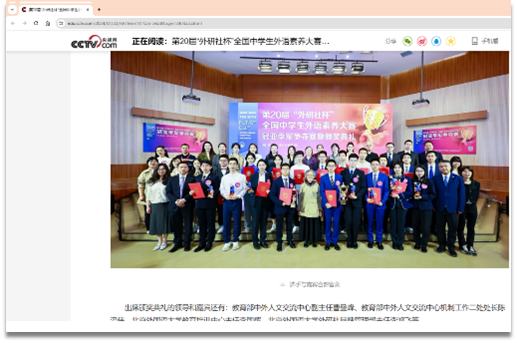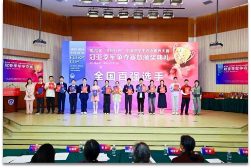
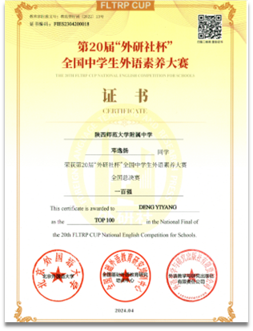
2. Nixie辉光管个人项目 (2023-2024)
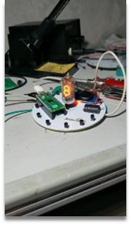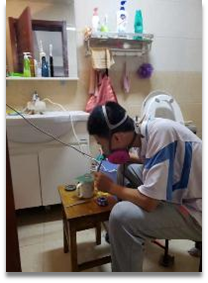
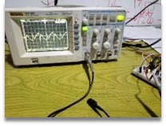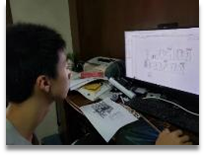
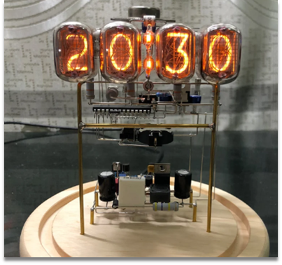
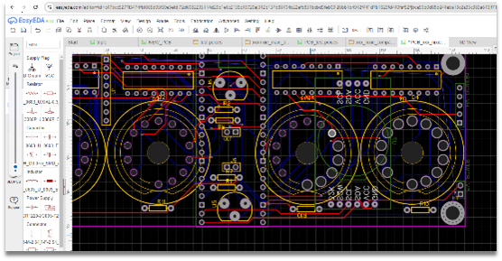
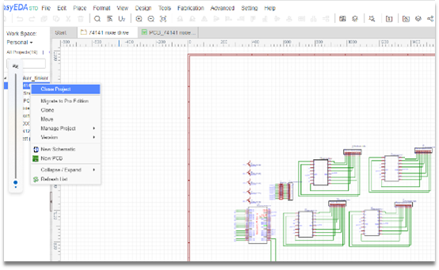
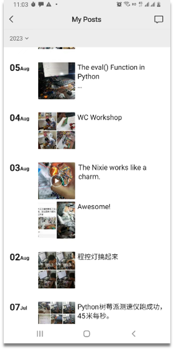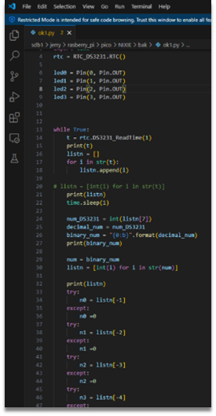
3. 2024.7 作为学校英风话剧策划者/编/导/演(华氏451)
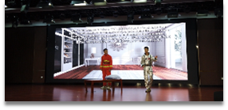
4. 2023.7 作为学校汉风话剧策划者/编/导/演(孔乙己)

5. 我用汉/英/西/法语主讲的公益英语IPA舌位口型教学系列视频(2021年)
https://www.bilibili.com/video/BV1Jy4y1g7JN，用汉语讲英语IPA系列(30集) ，
https://www.bilibili.com/video/BV1Qy4y1T7ti，用英语讲英语IPA系列(30集) ，
https://www.bilibili.com/video/BV1gv411W7qj，用西班牙语讲英语IPA系列(30集) ，
https://www.bilibili.com/video/BV1Jg411u78d，用法语讲英语IPA系列(30集) ，
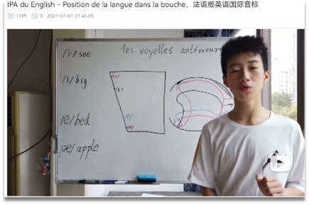
6. 我主持的每周末在线公益国际汉英交换会议系列之一(2021年起)
https://www.bilibili.com/video/BV1yG411V7aP ,
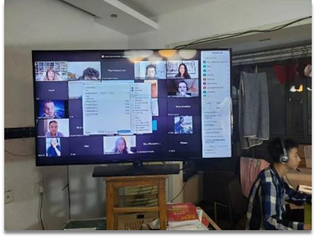
7. 我主讲的在线公益对外汉语系列之一(2021年起)
https://www.bilibili.com/video/BV17N4y1c7Qi
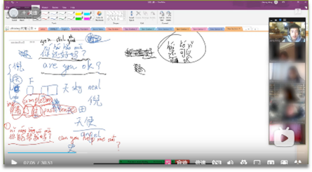
8. 我译制的英音版<二舅>(2022年)
https://www.bilibili.com/video/BV1fT41157YY
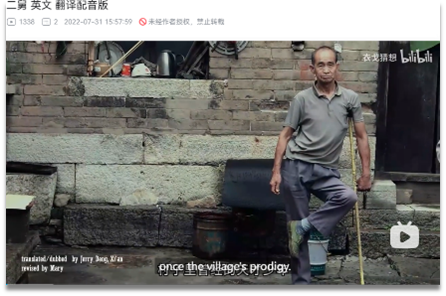